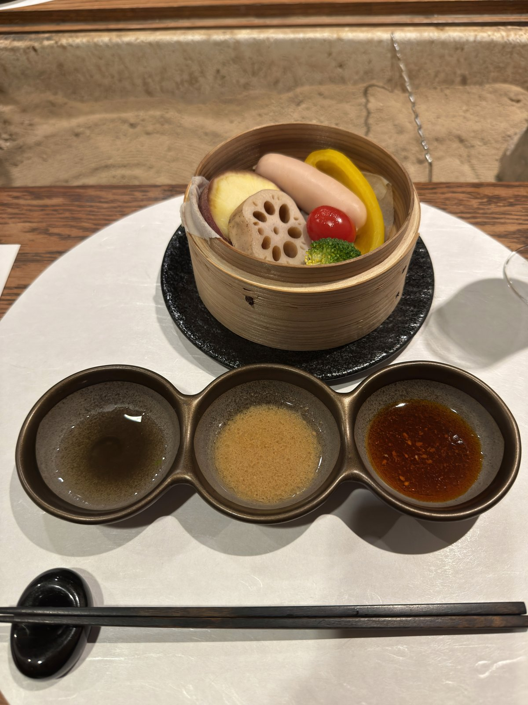
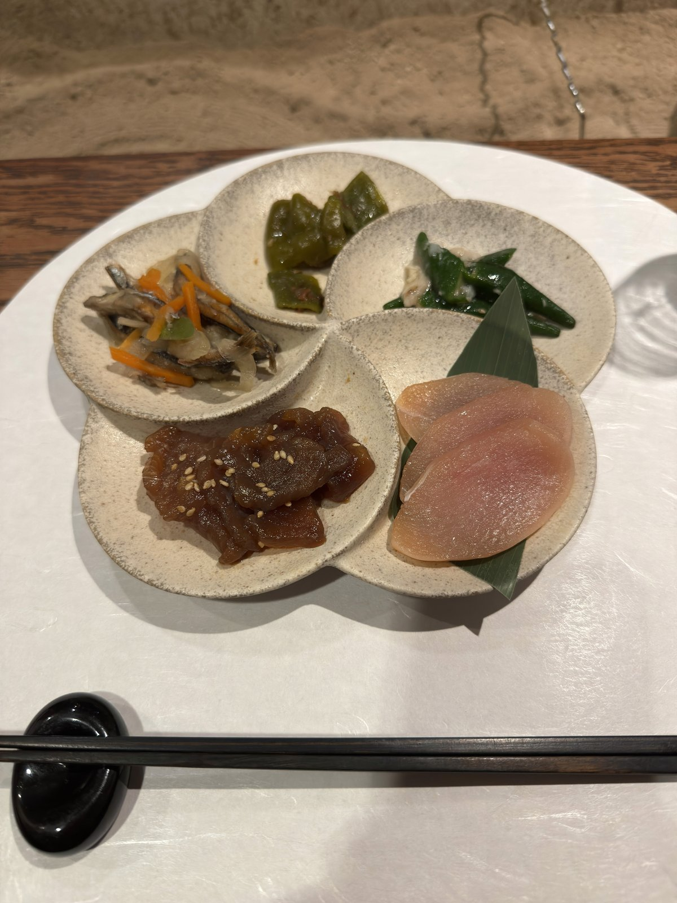
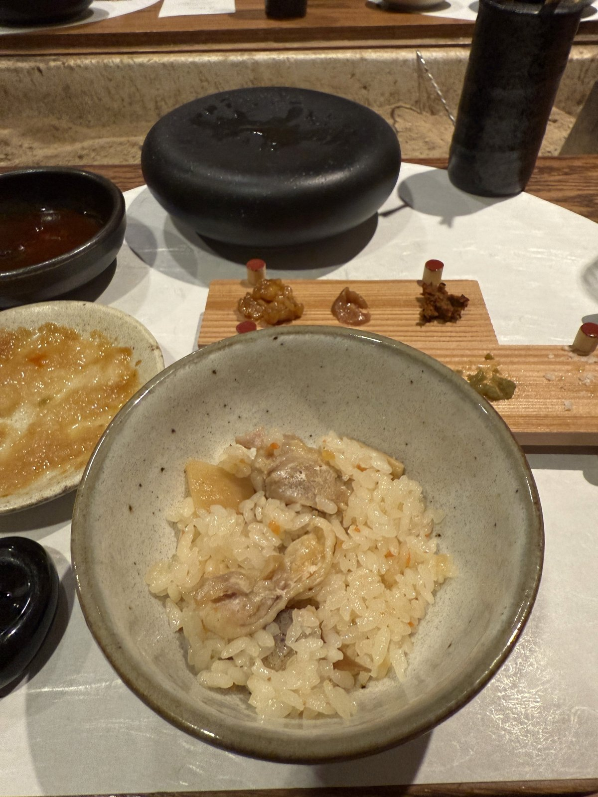
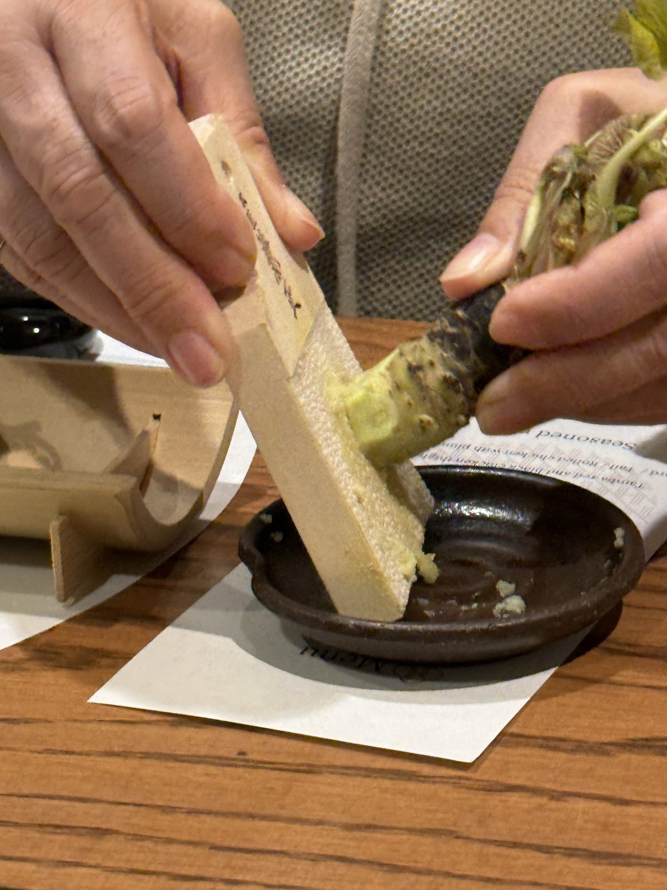
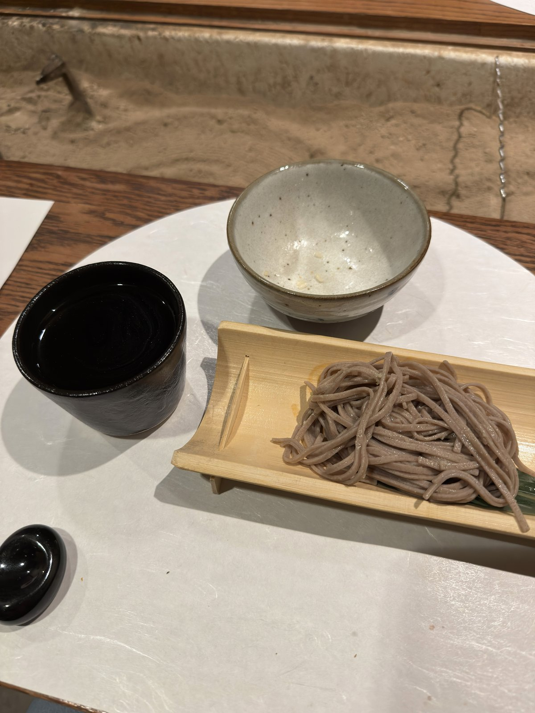
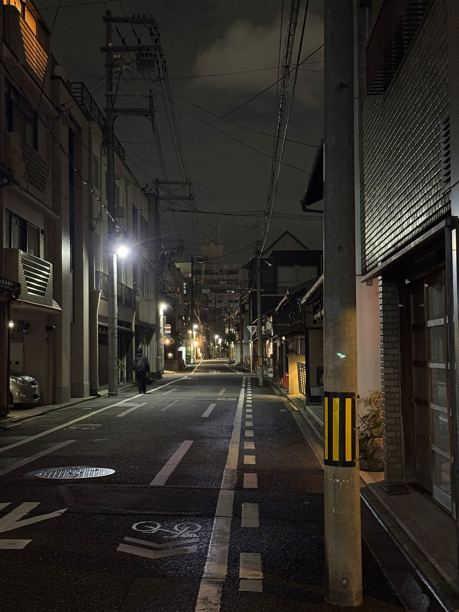

Since some time ago, Kyoto has become a city full of tourists. Many takes on that but to me it brought a greater joy of discovering hidden small details, because you get to appreciate those moments more. Not every place I visited sparked something in my heart, but there were plenty that allowed me to see and feel differently over those few days…
The ryokan we stayed at was a modern take on traditional Japanese lodging and hospitality - though this doesn't describe well of their idea. It was founded and operated by young Japanese people, and nearly all of the staff we interacted with were very young as well. This later becomes an inspiration to me.
On the first night, our dinner server was a girl who spoke a bit of Korean. We ended up talking in both Korean and English about Kyoto and Japanese culture, which at first I took as an exceptionally friendly gesture, more of an outlier than the norm. It had a slightly different tone than what you might expect from the usual Japanese hospitality.
(Quick small note: I had a bottle of sake that I no longer remember the name. It had a beautiful floral and fruity aroma. Maybe one day I'll find the name again, but I've decided to leave it as a happy snapshot in my memory. Sometimes it's better to keep them just as they were in the moment.)
The next morning, a new breakfast server brought the same atmosphere. We chatted about our plans for the day and her favorite temples as she grilled local vegetables and a fish on a skewer. She also said she enjoys eating them when camping by the mountain stream in the summer. There was a life behind those conversations and something about it felt pure. Maybe it was the vegetables and the slice of duck meat that both servers accidentally dropped, I don't think so. They were professional, but also stepped toward us and made a connection.
How many times do we actually "connect" with someone in the city?
Takeda-kun
Dinner on the second day came after a long day of traveling, and we didn't have much energy left. We sat down at the table, and Takeda, our server, introduced himself. What was supposed to be another elevated yakitori dinner experience turned into a fun night filled with laughs—and I credit Takeda-kun for all of it.
He started by asking a few questions about us, and by the time he brought the ingredients for the next dish in the course, he was trying to memorize certain Korean phrases. He got one right at some point, then I heard him quietly whisper よかった ("Phew, thank god"), and I couldn't help but think—this guy's really trying.


Appetizers: Seiro Mushi and Obanzai. I was never a fan of Okra until dining at the ryokan.
As he began grilling the chicken skewers, we ended up talking more about him. It must not have been me who initiated it, since I tend to avoid those topics out of respect for boundaries. He was from a rural prefecture that most foreigners wouldn't know (not saying the exact name here), so it surprised him when I told him I had heard of it. I casually followed up by asking if he was studying in Kyoto. He was, and he shared a bit about how rarely he could afford to go back to his hometown... not often. The train's too expensive, a car is necessary, or you'd have to take an overnight bus. Then he changed the mood a bit by revealing that the ryokan serves rice grown in his prefecture—the rice I had thought was the best I'd ever had. Hearing that while watching him grill the skewers felt like one of those moments where you get a small window into someone's life.




The conversation continued as we moved on to the soba noodle part of the course. By that point, the whole interaction felt more like a comedy skit in an izakaya. He asked if we liked udon or soba, clearly hoping someone would be on the same team as him (I was!). Then he tried to show us his favorite ramen place near Kyoto Station. But somehow, the Google Maps on his phone pulled up Arsenal in the UK, and we all went え？
Turns out he's going on an exchange program to the UK this summer, and as a soccer fan, he had been looking up different areas there. That accidental reveal led to more of his hopes—things he wants to do in New York City and California. He also shared his age (which isn't that common in Japan), and I started piecing together the bigger puzzle of Takeda-kun.
After learning a new way to eat soba with wasabi (mix it into the noodles, not the shoyu), the dinner came to an end. I had to step out for a walk to wrap my head around that whole interaction. I couldn't quite pin down whether that was just exceptional Japanese hospitality, a reflection of the ryokan's values, or simply a genuinely kind and open-minded guy making a connection. This ryokan, run by young entrepreneurs, clearly succeeds in bringing more of that into the world. Maybe it was a mix of all of those things. It left me inspired by the idea that you can contribute to making society feel more real and alive.
